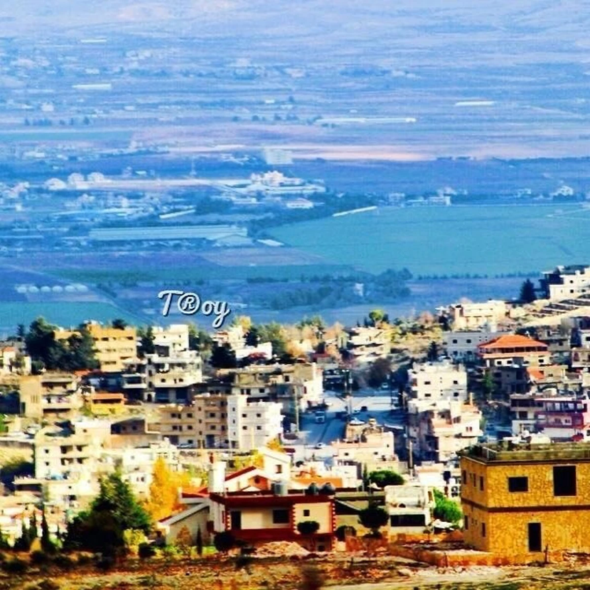
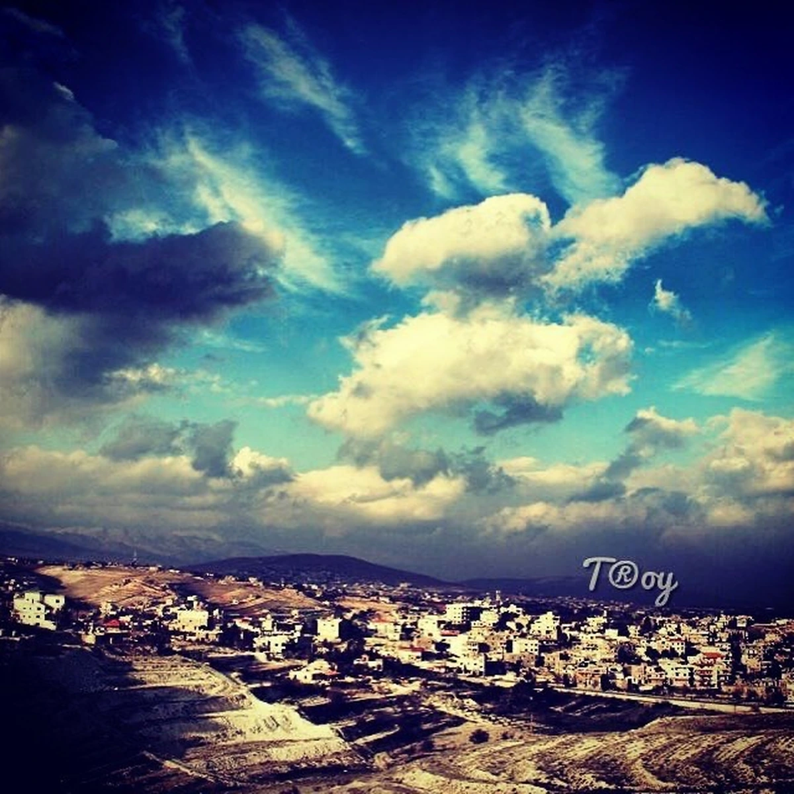

Ancient traces
Caves around the town and stone wells and water cisterns from the Byzantine era show that people lived here many centuries ago.
A town on the eastern slope of Mount Sannine, overlooking the Bekaa Valley.
Chmustar (شمسطار, also written Shmustar or Chmestar) is a town in the Baalbek District of the Baalbek-Hermel Governorate. It lies at about 1,250 metres above sea level, 75 km from Beirut and 21 km from Baalbek.
The town covers about 18 km². It borders Taarieh to the north and Kafr Dibesh to the south, with the Bekaa plain to the east and the Western Lebanon mountain range to the west.

| Arabic name | شمسطار |
|---|---|
| Governorate | Baalbek-Hermel |
| District | Baalbek |
| Elevation | About 1,250 m above sea level |
| Area | About 18 km² |
| Population | About 30,000 (2012 census) |
| Distance from Beirut | 75 km |
| Distance from Baalbek | 21 km |

The name is usually explained as a mix of shams (sun) and tar (mountain). Some link it to the Syriac Shemesh Ra. Both meanings point to the same picture: a sunny town on the mountainside — the idea behind our sun-and-mountain logo.
Caves around the town and stone wells and water cisterns from the Byzantine era show that people lived here many centuries ago.
Schools have served Chmustar since 1936. Today the town has public and private schools and vocational training.
Chmustar hosts official departments, health centres and a market used by dozens of nearby villages. It joins the calm of a village with the services of a city.